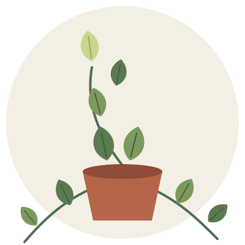
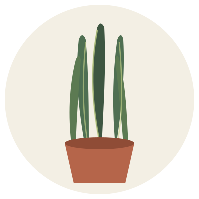
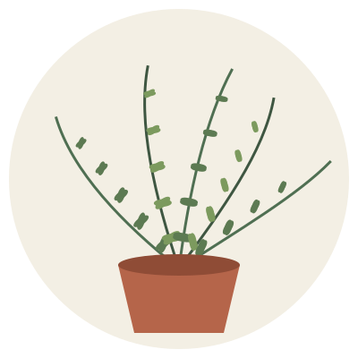
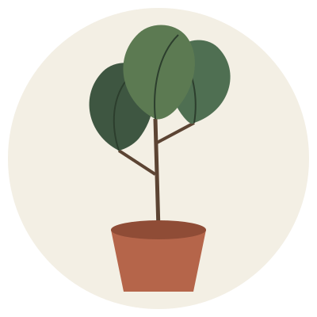
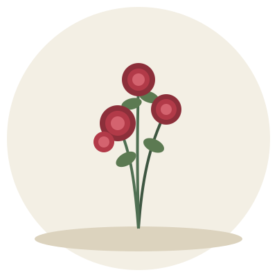
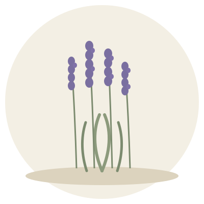
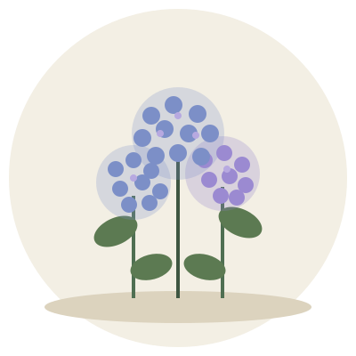
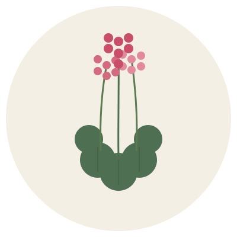

Potus
Epipremnum aureum
Trepadora de bajo mantenimiento, ideal para colgar o dejar caer sobre estanterías.
+ infoReunimos las plantas que cultivamos y cuidamos personalmente, con su ficha de cuidados descargable, para que elijas la compañera verde ideal para tu interior o tu jardín exterior.
Desplegá cada categoría para conocer las plantas disponibles. Cada tarjeta incluye una imagen representativa y un enlace para descargar su ficha completa en PDF.

Epipremnum aureum
Trepadora de bajo mantenimiento, ideal para colgar o dejar caer sobre estanterías.
+ info
Sansevieria trifasciata
Conocida como lengua de suegra, resiste el olvido y purifica el aire durante la noche.
+ info
Nephrolepis exaltata
Aporta frescura y volumen; agradece la humedad ambiente y la luz filtrada.
+ info
Ficus lyrata
Hojas grandes y brillantes que aportan una presencia escultural al ambiente.
+ info

Lavandula angustifolia
Aromática y resistente a la sequía; perfecta para bordes y macetas soleadas.
+ info
Hydrangea macrophylla
Grandes racimos de flores cuyo color varía según el pH del suelo.
+ info
Pelargonium spp.
Floración abundante casi todo el año; ideal para balcones y ventanas.
+ infoEste sitio es mantenido de forma artesanal por una familia amante de las plantas, que documenta y comparte el proceso de cuidar su propio jardín. Cada ficha que publicamos surge de la experiencia real de cultivo, ensayo y error en nuestro hogar, tanto en macetas de interior como en los canteros del patio.
Nuestro objetivo es simple: acercar información clara y honesta a quienes recién empiezan a formar su propio rincón verde, sin tecnicismos innecesarios.
¿Tenés dudas sobre alguna planta o querés consultarnos algo? Dejanos tus datos. Este formulario es solo de referencia: por el momento no procesa envíos.